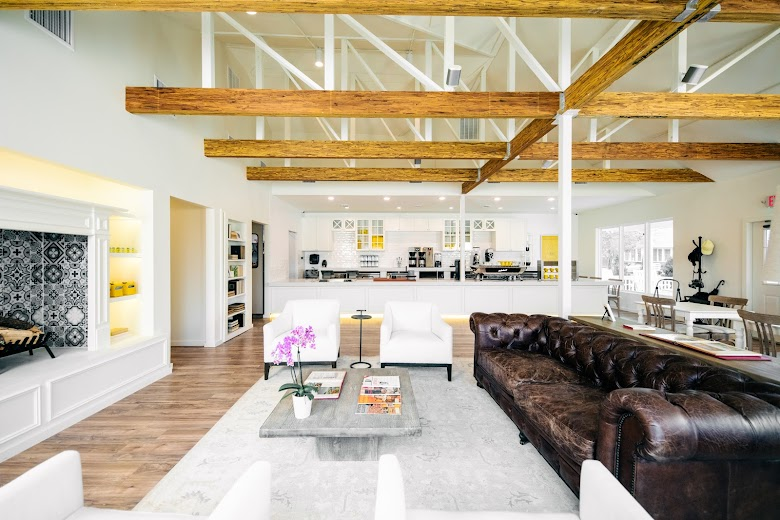

Recommended Cafes List
-
1. Ascension Coffee (Design District Flagship)
Signature Menu: Flat White ($5.94), Avocado Toast ($15.63)
Description (EN): An Australian-style "cafe + wine bar" concept. Enjoy specialty filter coffee and flat whites in the morning, and natural wine with small plates in the evening. You can taste beans roasted right in the 1st-floor roastery.
설명 (KO): 호주식 “카페+와인바” 콘셉트로, 오전엔 스페셜티 필터‧플랫화이트, 저녁엔 내추럴 와인과 스몰 플레이트까지 즐길 수 있는 올데이 카페. 1층 로스터리에서 볶은 원두를 바로 맛볼 수 있습니다.
Address: 1621 Oak Lawn Ave, Dallas, TX 75207
Visit Website View on Google Maps -
2. Civil Pour (The Hill)
Signature Menu: Espresso Flight ($6.50), Craft Beer Flight ($10)
Description (EN): Operates with coffee and craft beer on a "day-night two-tap" system. It's a popular community hub for students and remote workers due to ample tables and outlets.
설명 (KO): 커피와 수제맥주를 “낮-밤 투-탭”으로 운영. 넓은 테이블·콘센트가 많아 공부‧원격 근무자 커뮤니티가 활발합니다.
Address: 8061 Walnut Hill Ln Ste 924, Dallas, TX 75231
Visit Website View on Google Maps -
3. Davis Street Espresso
Signature Menu: 'Davis Street' Espresso Shot (~$3.25)
Description (EN): Directly operated by Oak Cliff Coffee Roasters. It promotes a 'slow coffee' experience encouraging conversation with baristas, featuring no menu boards, Wi-Fi, or disposable cups.
설명 (KO): Oak Cliff Coffee Roasters 직영 공간. 메뉴판·Wi-Fi·일회용 컵이 없고 바리스타와 대화하며 느긋하게 즐기는 ‘슬로우 커피’ 경험을 표방합니다.
Address: 819 W Davis St, Dallas, TX 75208
Visit Website View on Google Maps -

4. Full City Rooster
Signature Menu: Ethiopia Single-Origin Pour-Over ($5.00)
Description (EN): A light-roast micro-roastery housed in a converted warehouse south of downtown. They offer hands-on roasting classes on weekends.
설명 (KO): 다운타운 남쪽 창고를 개조한 라이트-배전 마이크로 로스터리. 주말엔 직접 로스팅 클래스를 운영합니다.
Address: 1810 S Akard St, Dallas, TX 75215
Visit Website View on Google Maps -
5. Houndstooth Coffee (Henderson Ave)
Signature Menu: BIL (Big Iced Latte) (~$5.75), House Espresso
Description (EN): The first Dallas location of the famous Austin-based brand. Focuses on precise extraction, even revealing recipes down to the 'shot unit'.
설명 (KO): 오스틴 본점으로 유명한 브랜드의 댈러스 1호점. ‘샷 단위’까지 레시피를 공개하며 정밀 추출에 집중합니다.
Address: 1900 N Henderson Ave, Dallas, TX 75206
Visit Website View on Google Maps -

6. La La Land Kind Cafe (Bell Ave)
Signature Menu: Lavender Bloom Latte (~$6.50), La La Latte
Description (EN): The iconic yellow bungalow is an SNS hotspot. Operates under the mission "to spread kindness," employing foster youth aging out of the system. Known for its sweet Lavender Latte and 'Matcha Kindness'.
설명 (KO): 노란 방갈로가 SNS 명소. “친절을 전파한다” 미션 아래 보호종료 청년 고용 프로그램을 운영하며, 달콤한 라벤더 라떼와 ‘Matcha Kindness’가 인기입니다.
Address: 5626 Bell Ave, Dallas, TX 75206
Visit Website View on Google Maps -
7. LDU Coffee (Fitzhugh Ave)
Signature Menu: Magic (Double Ristretto) ($4.50), Banana Bread
Description (EN): An "Australian-style grab-and-go" bar opened by Australian brothers. Known for fast and casual ordering/pickup, with the Australian 'Magic' coffee as its signature.
설명 (KO): 호주 형제가 연 “호주식 그랩-앤-고” 바. 주문-수령이 빠르고 캐주얼하며, 호주식 ‘매직’이 시그니처입니다.
Address: 2650 N Fitzhugh Ave, Dallas, TX 75204
Visit Website View on Google Maps -
8. Merit Coffee (Preston Hollow Village)
Signature Menu: Honey Lavender Latte ($5.35), Seasonal Frozen Coffee
Description (EN): A San Antonio-based specialty coffee company. Manages the entire process from origin to roasting to service with a 'crop-to-cup' system. A strong point is their in-house bakery pastries.
설명 (KO): 샌안토니오 기반 스페셜티 기업. ‘crop-to-cup’ 시스템으로 원두 산지-배전-서비스 전 과정을 관리하고, 자체 베이커리 페이스트리가 강점입니다.
Address: 7865 Firefall Way Ste 180, Dallas, TX 75230
Visit Website View on Google Maps -
9. Toasted Coffee + Kitchen (Ross Ave)
Signature Menu: Avocado Smash Toast ($5.50), Horchata Latte
Description (EN): A "Coffee + toast bar" concept. Famous for about 20 types of sourdough toast and cream cheese waffle lattes; expect a wait on weekends.
설명 (KO): “커피+토스트 바” 콘셉트. 20여 종의 사워도우 토스트와 크림치즈 와플 라떼가 유명해 주말엔 대기 필수입니다.
Address: 5420 Ross Ave Ste 180, Dallas, TX 75206
Visit Website View on Google Maps -
10. Weekend Coffee (The Joule Hotel)
Signature Menu: Butterscotch Latte ($5.00 / 12 oz, $6.00 / 16 oz), Chai Latte
Description (EN): Located in the lobby of the design hotel 'The Joule'. Attracts both tourists and business visitors with its mid-century interior and seasonal barista specials (like cold brew tops).
설명 (KO): 디자인 호텔 ‘The Joule’ 로비에 위치. 미드센추리 인테리어와 계절별 바리스타 스페셜(콜드브루 탑 등)이 어울려 관광객과 비즈니스 방문객 모두 찾습니다.
Address: 1530 Main St, Dallas, TX 75201
Visit Website View on Google Maps
{kind=link}
{kind=link}
{kind=link}
{kind=link}
{kind=link}
{kind=link}
{kind=link}
{kind=link}
{kind=link}